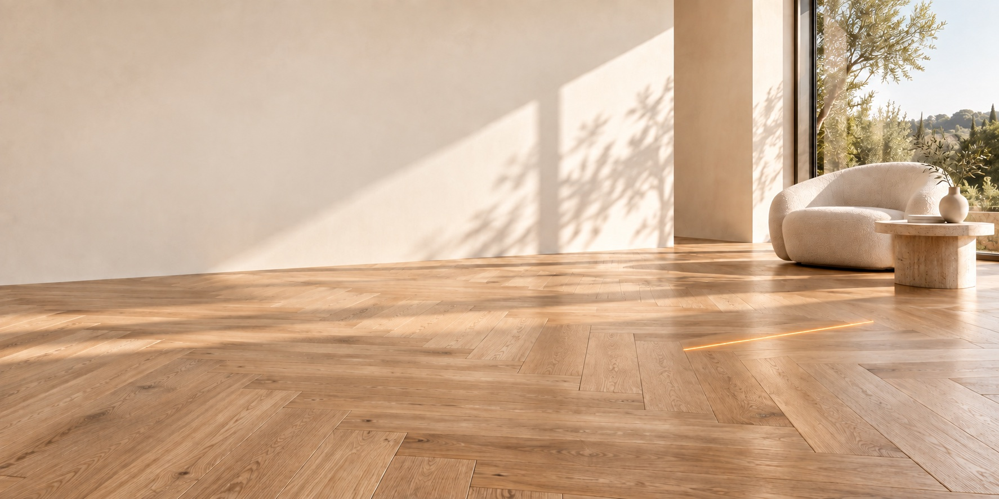
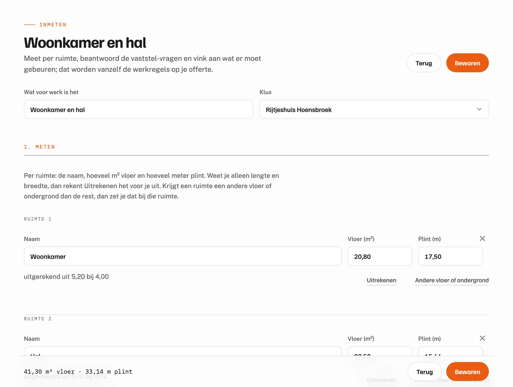
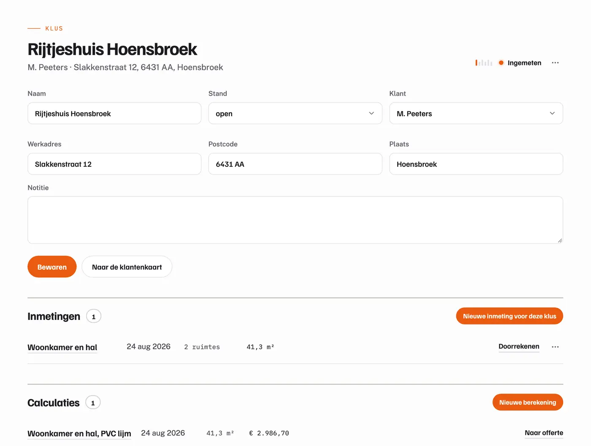
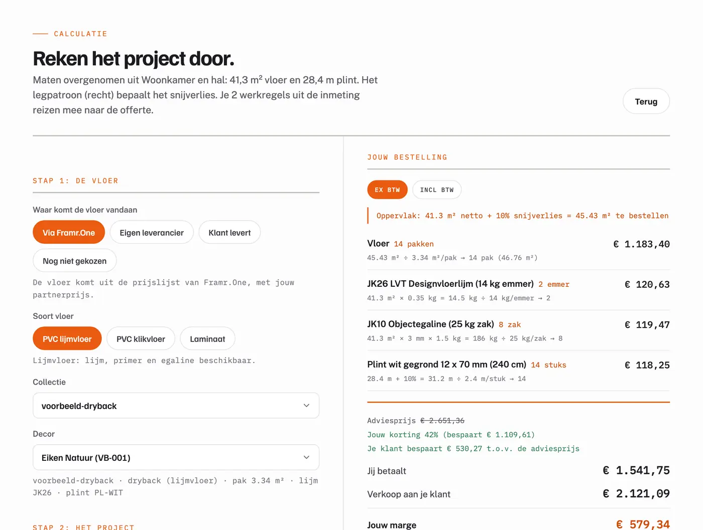
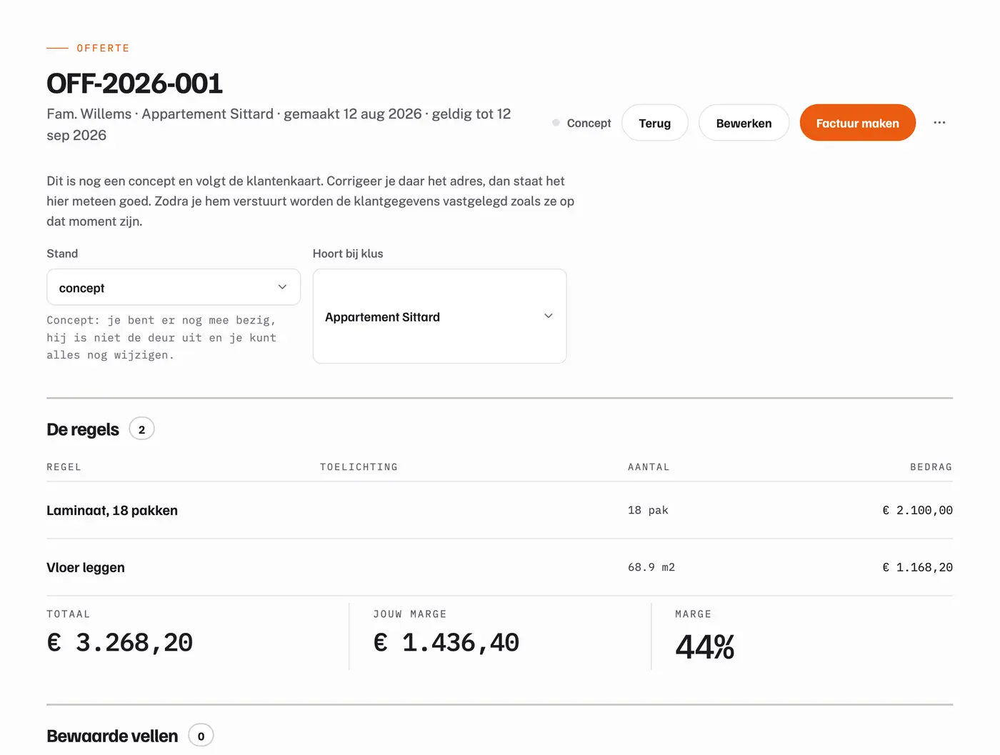
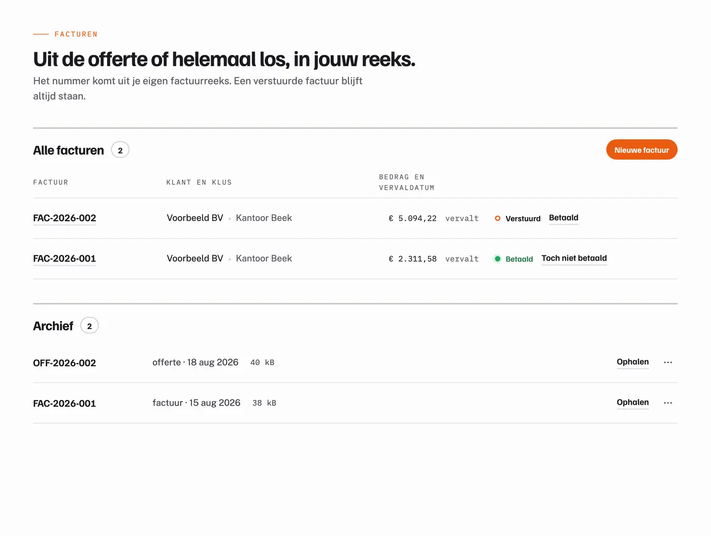

Framr.One Vloeren
Live
Vloeren
Voor de vloerenlegger en het vloerenbedrijf. Inmeten per ruimte, rekenen met legpatroon en snijverlies, en het materiaal rechtstreeks via Oaklyn.
Inmeten, calculeren, offreren, bestellen en factureren in een doorlopende keten, met de groothandel erin gebouwd.
Vloerenlive→Kozijnenin ontwikkeling→Volgende
Het platform
Wat je op locatie inmeet, reist mee naar de calculatie, de offerte en de factuur. Elke stap werkt ook los.





Vakgebieden
Alleen het inmeten, het rekenen en het bestellen verschillen per vak. Daarom komt er per vak een module bij, op dezelfde kern en in hetzelfde account.

Framr.One VloerenVoor de vloerenlegger en het vloerenbedrijf. Inmeten per ruimte, rekenen met legpatroon en snijverlies, en het materiaal rechtstreeks via Oaklyn.
Voor de aannemer die kozijnen plaatst. In hetzelfde account, met dezelfde stappen, en het kozijn rechtstreeks van de fabriek.
Dezelfde kern draagt het volgende vak, zonder nieuw systeem en in hetzelfde account.
Inkoop
Softwarebedrijven verkopen software, groothandels verkopen materiaal. Framr.One koppelt de twee: wat je inmeet, wordt een bestelling.
Pakken, snijverlies per legpatroon, lijm, egaline en plinten komen uit je inmeting, niet uit je hoofd.
Je koopt scherper in dan bij de plaatselijke groothandel, omdat je rechtstreeks bij de bron zit.
Wat je klant betaalt bepaal jij. Wat jij op je werk verdient is jouw zaak, niet de onze.
Wat het kost
Framr.One verdient aan het materiaal dat via het platform loopt, niet aan de software. Daarom is het in ons belang dat jouw offerte zo snel mogelijk de deur uit is: hoe minder tijd je aan rekenwerk kwijt bent, hoe meer werk je aanneemt.
Fundament
Nieuwe werkstromen, vakken en koppelingen komen op hetzelfde fundament, in hetzelfde account.
Beginnen
Je meldt je aan, vult je bedrijfsgegevens een keer in en meet meteen je eerste klus in. Vloeren rolt nu uit; kozijnen komt in hetzelfde account.